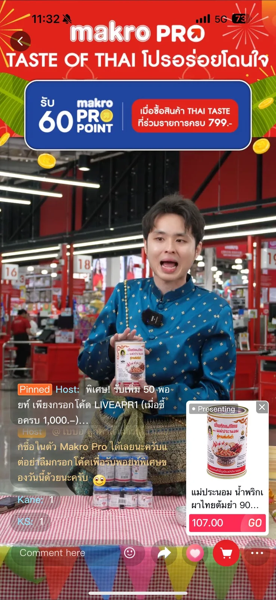

ไลฟ์คอมเมิร์ซ / การบริหารโครงการ
Makro PRO
ขับเคลื่อนแคมเปญ 4.4 และ 5.5
รับโจทย์ลูกค้าโดยตรงและดูแลไลฟ์แคมเปญ 4.4 และ 5.5 ที่แม็คโครสาทร ตั้งแต่ 08.00–23.00 น. พร้อมบริหารความพร้อมของโปรดักชันและข้อมูลสินค้า

01 / บริบท
15 ชั่วโมง ท่ามกลางพื้นที่ขายจริง
แคมเปญ 4.4 และ 5.5 จัดไลฟ์นอกสถานที่ที่แม็คโครสาทร ตั้งแต่ 08.00–23.00 น. หรือประมาณ 15 ชั่วโมง ต้องดูแลอุปกรณ์และการเชื่อมต่อให้พร้อมตลอดไลฟ์ พร้อมบริหารสินค้าประมาณ 400 SKU ที่มีการเปลี่ยนราคาทุก 2–3 ชั่วโมงผ่านระบบอัปเดตแบบแมนนวล
02 / เป้าหมาย
ไลฟ์ต่อเนื่อง ข้อมูลโปรโมชั่นเป็นปัจจุบัน
ถ่ายทอดสินค้าและโปรโมชั่นเพื่อสนับสนุนยอดขายของแบรนด์ โดยให้ไลฟ์ดำเนินไปอย่างราบรื่น ข้อมูลราคาตรงกับข้อเสนอในแต่ละช่วง และทีมตอบคำถามลูกค้าได้ทันที
03 / บทบาทของผม
จากโจทย์ลูกค้าสู่แผนโปรดักชัน
ช่วงที่ดูแลแคมเปญยังไม่มี AM/AE เข้ามารับหน้าที่ประสานลูกค้า ผมจึงรับโจทย์และสื่อสารกับลูกค้าโดยตรง แปลงความต้องการให้เป็นภาพและแผนงานที่ทีมโปรดักชันทำต่อได้ พร้อมออกแบบภาพรวมและจังหวะของไลฟ์ให้ต่อเนื่องตลอดวัน
04 / แนวคิดและกระบวนการ
เตรียมพร้อมรับสิ่งที่อาจทำให้ไลฟ์สะดุด
ความเสี่ยงสำคัญคืออินเทอร์เน็ตที่ไม่เสถียร เพราะหากสัญญาณขาดจนไลฟ์ตัด ต้องสร้างห้องไลฟ์และตะกร้าสินค้าใหม่ ผมจัดหาอินเทอร์เน็ตจากบริษัทให้เช่า พร้อมทีมซัพพอร์ตที่ติดต่อเพื่อวิเคราะห์ปัญหาและช่วยกู้การเชื่อมต่อได้ เตรียมอุปกรณ์สำรองสำหรับเปลี่ยนทันทีเมื่ออุปกรณ์มีปัญหา และปรับตำแหน่งไมค์ให้ใกล้ปาก MC พร้อมตั้งค่าลดเสียงรบกวนจากพื้นที่ขายสินค้า
05 / การดำเนินงาน
แบ่งงานให้ชัด ตอบสนองได้ทันที
ผมแบ่งการอัปเดตราคากับโปรดิวเซอร์อีกคน โดยดูแลรายการสินค้า 1–200 และให้อีกคนดูแลรายการ 201–400 เพื่อให้การเปลี่ยนราคาตามรอบโปรโมชั่นทำได้ทันเวลา ระหว่างไลฟ์ประสานทีมโปรดักชันและผู้ให้บริการอินเทอร์เน็ตเมื่อเกิดปัญหา พร้อมดูแลให้ทีมตอบลูกค้าได้ต่อเนื่อง
06 / ผลลัพธ์และบทเรียน
ยอดขายรวมประมาณ 20 ล้านบาทจากสองแคมเปญ
แคมเปญ 4.4 และ 5.5 สร้างยอดขายรวมประมาณ 20 ล้านบาท หลังใช้แนวทางจัดการเหล่านี้ ไลฟ์มีความราบรื่นขึ้นและทีมตอบลูกค้าได้ทันที ผมสังเกตว่ามีผู้ชมเข้ามามากขึ้นเมื่อจัดไลฟ์ที่แม็คโครสาทร
ยอดขายรวมประมาณ 20 ล้านบาทจากสองแคมเปญ 4.4 และ 5.5 ตามข้อมูลที่ผมยืนยัน
งาน Makro เพิ่มเติม / ไลฟ์เชฟรายสัปดาห์
ทำอาหารเป็นหลัก เชื่อมสินค้าให้เข้ากับเนื้อหา
อีกโปรเจกต์ที่ผมดูแลในบทบาท PM คือไลฟ์ทำอาหารกับเชฟสัปดาห์ละหนึ่งครั้ง ผมรับโจทย์และ SKU จากลูกค้า มาพัฒนาเป็นเมนูอาหารประจำสัปดาห์ พร้อมเตรียมสคริปต์ให้ MC และเชฟ เพื่อให้สิ่งที่ลูกค้าต้องการเกิดขึ้นจริงในรายการ
จังหวะการนำเสนอสินค้าเชื่อมกับสิ่งที่เชฟกำลังทำ เมื่อเชฟใช้วัตถุดิบหรือ SKU นั้น MC จึงเข้ามาแนะนำสินค้าและอธิบายการใช้งาน โดยให้การทำอาหารเป็นเนื้อหาหลัก รักษาบรรยากาศที่เป็นธรรมชาติสำหรับทั้ง MC และเชฟ รวมถึงเชฟอินฟลูเอนเซอร์และเชฟจากรายการแข่งขันทำอาหาร
ภาพจากโปรเจกต์
เริ่มต้นโปรเจกต์ด้วยกัน
โปรเจกต์ถัดไปของคุณ
มาทำให้เกิดขึ้นจริงด้วยกัน
พูดคุยโอกาสด้าน Project Management, Ecommerce
และ Campaign Execution